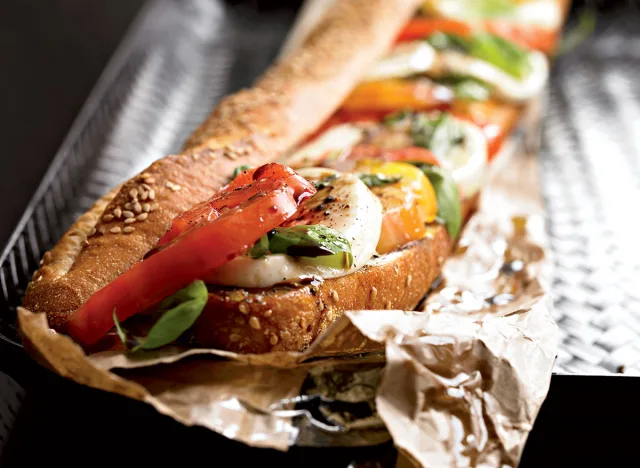

Description
The pairing of creamy fresh mozzarella, juicy ripe tomatoes,
and fat leaves of sweet basil is so good that you'd be crazy not to exploit it as often as possible to make
yourself look like a culinary genius.
Ingredients
- 1 baguette, sliced in half lengthwise
- 1 clove garlic, peeled and cut in half
- 2 large heirloom tomatoes, sliced
- 4 oz fresh mozzarella, sliced
- 15–20 fresh basil leaves
- Salt and black pepper to taste
- 1 Tbsp olive oil
- 1 Tbsp balsamic vinegar
Steps
- Preheat the broiler.
- Broil the baguette, cut sides up, 6" from heat, for about 2 minutes, until the inside is lightly
toasted.
- Rub each half with a half clove of garlic; the crusty bread will release the garlic's essential oils,
giving you instant garlic bread.
- Layer the bottom half of the baguette, alternating with slices of tomato, mozzarella, and basil leaves.
- Season evenly with salt and lots of fresh black pepper.
- Finish with a drizzle of olive oil and vinegar, then top with the other baguette half.
- Cut the whole package into four pieces.